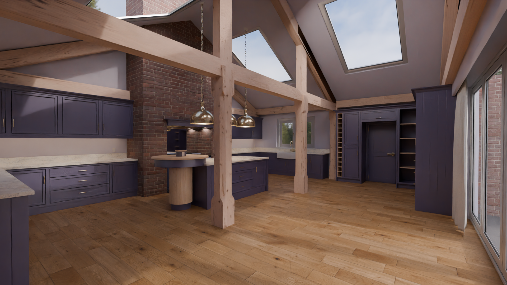
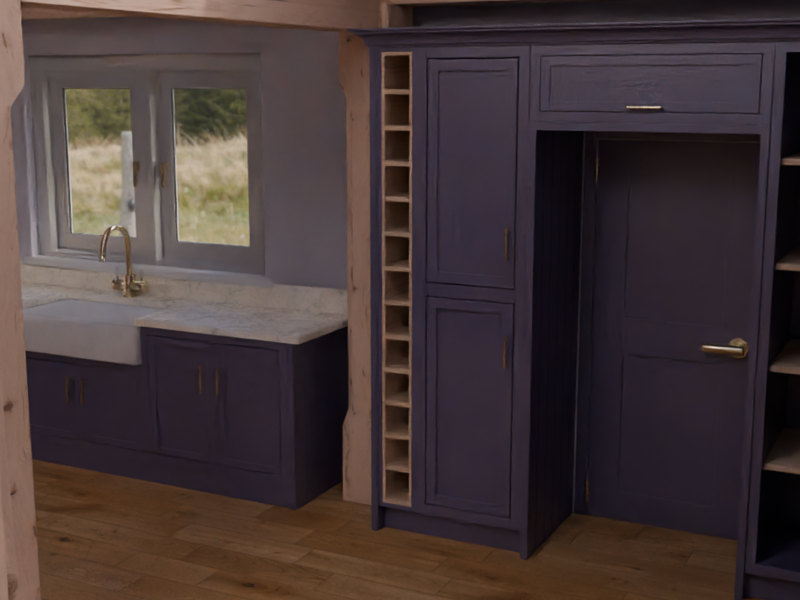
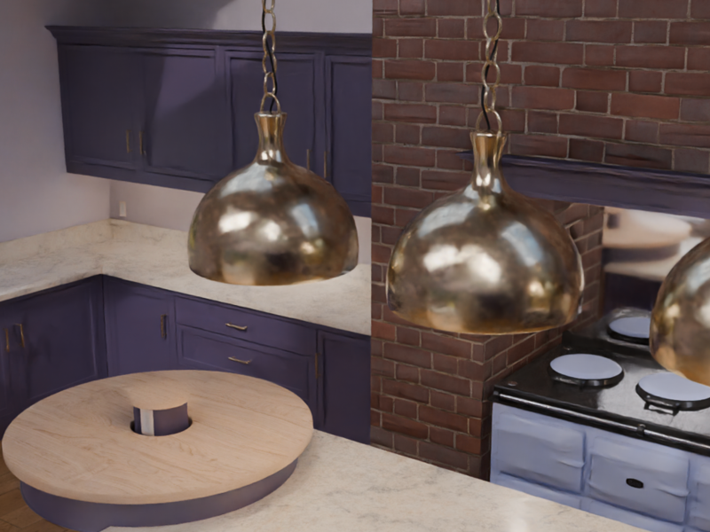
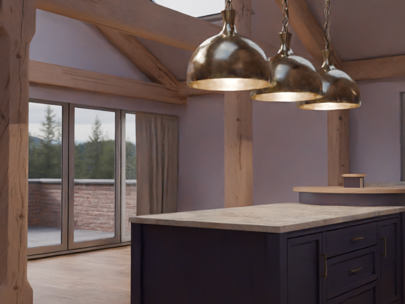

Kitchen Scene
2026

An interior scene demands a different kind of thinking than modelling a single hero object. A kitchen has to read as a coherent, believable space: proportions need to feel architecturally right, surfaces need to respond to light in ways that match their real-world counterparts, and dozens of individual elements throughout the scene need to work together without any one of them looking out of place.
Lighting was central to making the result convincing. Interior spaces live by how light moves through them: where it falls hard, where it wraps softly, and how it reveals texture and depth across each surface. The texturing work paired closely with this, using a mix of standard texture maps and procedural materials built in Blender's node editor, which allows precise control over surface character without relying on photographic sources.
The final deliverable went beyond a still render: the project included an animated camera sequence to present the space as a client-ready walkthrough. Producing a smooth, purposeful camera animation adds a production dimension that still images alone cannot achieve.
Completed as part of Edward Harding's Interior 3D Design, Modelling and Rendering course on Skillshare.


